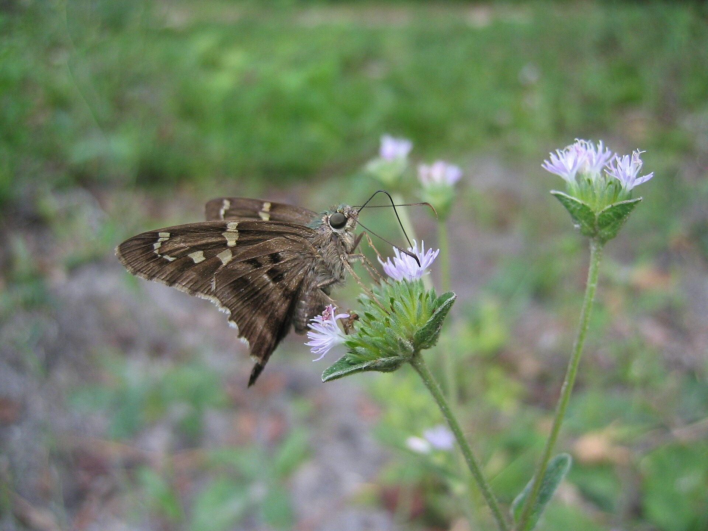
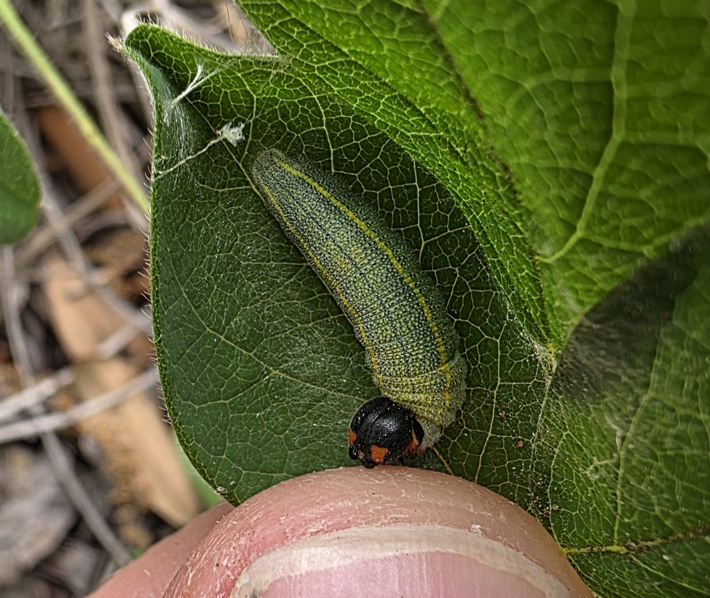

Urbanus proteus
PossibleThe one with tails and a green body, on beans and beggarweeds. A real fall migrant on the peninsula (north Florida median mid-October), and a year-round south Florida resident. Late August is early for the pulse; do not expect a cloud of them yet.

Yards, bean patches, weedy lots, garden edges.
Ticktrefoils
Desmodiumbutterfly peas
Centrosemamilkpeas
Galactiagarden beans
PhaseolusDorantes Longtail is plain brown, no green sheen.
Yes. Peak around October. Thin here this August.